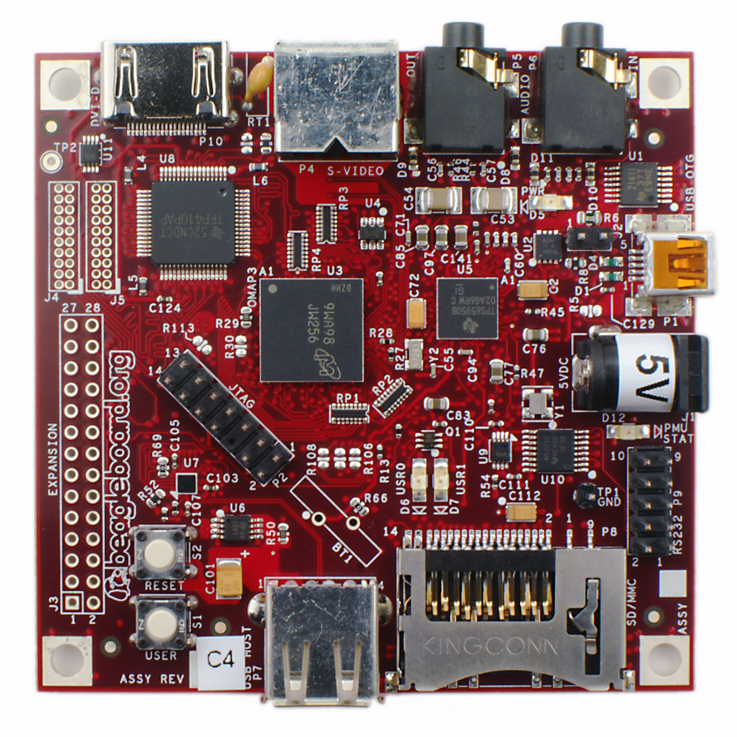

I help with delivering Khan Academy to places without internet
Foundation for Learning Equality
I am a SmartDevCon organizer?
Somehow I ended up there
I am helping with the best robot competition out there
RoboCup
How smart devices shape the world of robotics?
How smart devices shape the world of robotics
Agenda
Definition of terms
Smart devices and robots in:
the past
the present
the future
The Answer
Q & A
What is a robot?
“ Any automatically operated machine that replaces human effort, though it may not resemble human beings in appearance or perform functions in a humanlike manner. ”
Encyclopaedia Britannica
“ A mechanical device that sometimes resembles a human and is capable of performing a variety of often complex human tasks on command or by being programmed in advance. ”
The Free Dictionary
“ I can't define a robot, but I know one when I see one. ”
Joseph Engelberger
Where did the robot come from?
from robota
(robocizna)
Where did the robot come from?
Eurobarometer
“ Experience of robots (at home, at work or elsewhere) is
most widespread in Slovakia (20%), followed by Poland (19%). ”
What is a smart device?
filipk: you probably play with some smart devices or even build them
me: define smart
filipk: I won't define
me: ok
me: then I do
According to smartdevcon.eu
internet tables
smartphones
game consoles
connected TV
IVI
RaspberryPi

BeagleBoard
BeagleBone Black
“ Anything that runs Linux has to be smart ”
“ Anything that runs a UNIX-like OS has to be smart ”